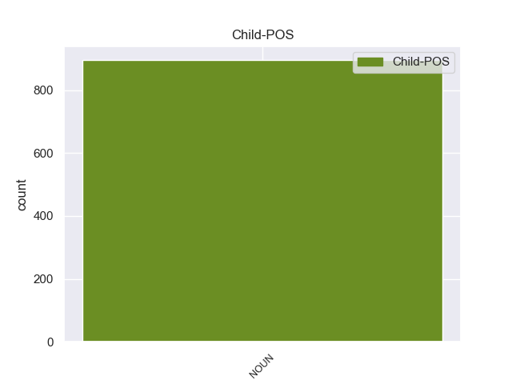

Distribution of features within this leaf



Agreement Rules sorted by frequency.
- When the dependent token is the conjunct(conj) of the head token, and the dependent token is NOUN.
1 Υποστήριξε _ _ _ _ 0 _ _ _
2 πως _ _ _ _ 0 _ _ _
3 τα _ _ _ _ 0 _ _ _
4 ανθρώπινα _ _ _ _ 0 _ _ _
5 δικαιώματα _ _ _ _ 0 _ _ _
6 των _ _ _ _ 0 _ _ _
7 Θιβετιανών _ _ _ _ 0 _ _ _
8 παραβιάζονται _ _ _ _ 0 _ _ _
9 μέσω _ _ _ _ 0 _ _ _
10 διακρίσεων _ _ _ _ 0 _ _ _
11 , _ _ _ _ 0 _ _ _
12 σε _ _ _ _ 0 _ _ _
13 εφαρμογή _ _ _ _ 0 _ _ _
14 μιας _ _ _ _ 0 _ _ _
15 πολιτικής _ _ _ _ 0 _ _ _
16 που _ _ _ _ 0 _ _ _
17 οι _ _ _ _ 0 _ _ _
18 Κινέζοι _ _ _ _ 0 _ _ _
19 αποκαλούν _ _ _ _ 0 _ _ _
20 " _ _ _ _ 0 _ _ _
21 διαχωρισμός διαχωρισμός NOUN NOUN Case=Nom|Gender=Masc|Number=Sing 0 _ _ _
22 και _ _ _ _ 0 _ _ _
23 αφομοίωση αφομοίωση NOUN NOUN Case=Nom|Gender=Fem|Number=Sing 21 conj _ SpaceAfter=No
24 " _ _ _ _ 0 _ _ _
25 . _ _ _ _ 0 _ _ _
1 Πιστεύω _ _ _ _ 0 _ _ _
2 ότι _ _ _ _ 0 _ _ _
3 όλες _ _ _ _ 0 _ _ _
4 οι _ _ _ _ 0 _ _ _
5 προσπάθειες προσπάθεια NOUN NOUN Case=Nom|Gender=Fem|Number=Plur 13 nsubj _ _
6 για _ _ _ _ 0 _ _ _
7 να _ _ _ _ 0 _ _ _
8 θέσουμε _ _ _ _ 0 _ _ _
9 τέλος _ _ _ _ 0 _ _ _
10 σ' _ _ _ _ 0 _ _ _
11 αυτό _ _ _ _ 0 _ _ _
12 είναι _ _ _ _ 0 _ _ _
13 λίγες λίγος ADJ ADJ Case=Nom|Gender=Fem|Number=Plur 0 _ _ _
14 . _ _ _ _ 0 _ _ _
1 Όπως _ _ _ _ 0 _ _ _
2 ανέφεραν _ _ _ _ 0 _ _ _
3 , _ _ _ _ 0 _ _ _
4 « _ _ _ _ 0 _ _ _
5 οι _ _ _ _ 0 _ _ _
6 συμπλοκές _ _ _ _ 0 _ _ _
7 ξέσπασαν _ _ _ _ 0 _ _ _
8 σ _ _ _ _ 0 _ _ _
9 την _ _ _ _ 0 _ _ _
10 επαρχία _ _ _ _ 0 _ _ _
11 Αμπιγιάν _ _ _ _ 0 _ _ _
12 , _ _ _ _ 0 _ _ _
13 όταν _ _ _ _ 0 _ _ _
14 οι _ _ _ _ 0 _ _ _
15 ένοπλοι _ _ _ _ 0 _ _ _
16 πυροδότησαν _ _ _ _ 0 _ _ _
17 αυτοκίνητα _ _ _ _ 0 _ _ _
18 παγιδευμένα παγιδευμένος VERB VERB Aspect=Perf|Case=Acc|Gender=Neut|Number=Plur|VerbForm=Part|Voice=Pass 0 _ _ _
19 με _ _ _ _ 0 _ _ _
20 εκρηκτικά εκρηκτικά NOUN NOUN Case=Acc|Gender=Neut|Number=Plur 18 obl _ _
21 και _ _ _ _ 0 _ _ _
22 κατέλαβαν _ _ _ _ 0 _ _ _
23 στρατιωτικό _ _ _ _ 0 _ _ _
24 φυλάκιο _ _ _ _ 0 _ _ _
25 σ _ _ _ _ 0 _ _ _
26 την _ _ _ _ 0 _ _ _
27 περιοχή _ _ _ _ 0 _ _ _
28 Κουντ _ _ _ _ 0 _ _ _
29 κοντά _ _ _ _ 0 _ _ _
30 σ _ _ _ _ 0 _ _ _
31 την _ _ _ _ 0 _ _ _
32 πρωτεύουσα _ _ _ _ 0 _ _ _
33 της _ _ _ _ 0 _ _ _
34 επαρχίας _ _ _ _ 0 _ _ _
35 Ζίνζιμπαρ _ _ _ _ 0 _ _ _
36 » _ _ _ _ 0 _ _ _
37 . _ _ _ _ 0 _ _ _
1 Προγράμματα πρόγραμμα NOUN NOUN Case=Acc|Gender=Neut|Number=Plur 2 obj _ _
2 χρηματοδοτούμενα χρηματοδοτούμενος VERB VERB Aspect=Perf|Case=Acc|Gender=Neut|Number=Plur|VerbForm=Part|Voice=Pass 0 _ _ _
3 από _ _ _ _ 0 _ _ _
4 το _ _ _ _ 0 _ _ _
5 MEDA _ _ _ _ 0 _ _ _
6 εφαρμόζονται _ _ _ _ 0 _ _ _
7 ήδη _ _ _ _ 0 _ _ _
8 για _ _ _ _ 0 _ _ _
9 τη _ _ _ _ 0 _ _ _
10 στήριξη _ _ _ _ 0 _ _ _
11 του _ _ _ _ 0 _ _ _
12 βιομηχανικού _ _ _ _ 0 _ _ _
13 εκσυγχρονισμού _ _ _ _ 0 _ _ _
14 , _ _ _ _ 0 _ _ _
15 της _ _ _ _ 0 _ _ _
16 διαρθρωτικής _ _ _ _ 0 _ _ _
17 προσαρμογής _ _ _ _ 0 _ _ _
18 , _ _ _ _ 0 _ _ _
19 της _ _ _ _ 0 _ _ _
20 ανάπτυξης _ _ _ _ 0 _ _ _
21 του _ _ _ _ 0 _ _ _
22 ιδιωτικού _ _ _ _ 0 _ _ _
23 τομέα _ _ _ _ 0 _ _ _
24 , _ _ _ _ 0 _ _ _
25 της _ _ _ _ 0 _ _ _
26 κατάρτισης _ _ _ _ 0 _ _ _
27 και _ _ _ _ 0 _ _ _
28 της _ _ _ _ 0 _ _ _
29 προώθησης _ _ _ _ 0 _ _ _
30 των _ _ _ _ 0 _ _ _
31 μικρομεσαίων _ _ _ _ 0 _ _ _
32 επιχειρήσεων _ _ _ _ 0 _ _ _
33 . _ _ _ _ 0 _ _ _
1 « _ _ _ _ 0 _ _ _
2 Δεκαεννέα _ _ _ _ 0 _ _ _
3 κρατούμενοι κρατούμενος NOUN NOUN Case=Nom|Gender=Masc|Number=Plur 0 _ _ _
4 , _ _ _ _ 0 _ _ _
5 μέλη μέλος NOUN NOUN Case=Nom|Gender=Neut|Number=Plur 3 appos _ _
6 της _ _ _ _ 0 _ _ _
7 Αλ _ _ _ _ 0 _ _ _
8 Κάιντα _ _ _ _ 0 _ _ _
9 και _ _ _ _ 0 _ _ _
10 της _ _ _ _ 0 _ _ _
11 Ανσάρ _ _ _ _ 0 _ _ _
12 αλ-Σούνα _ _ _ _ 0 _ _ _
13 , _ _ _ _ 0 _ _ _
14 απέδρασαν _ _ _ _ 0 _ _ _
15 σ _ _ _ _ 0 _ _ _
16 τις _ _ _ _ 0 _ _ _
17 03:30 _ _ _ _ 0 _ _ _
18 από _ _ _ _ 0 _ _ _
19 τη _ _ _ _ 0 _ _ _
20 φυλακή _ _ _ _ 0 _ _ _
21 , _ _ _ _ 0 _ _ _
22 αφού _ _ _ _ 0 _ _ _
23 αποκοίμισαν _ _ _ _ 0 _ _ _
24 τους _ _ _ _ 0 _ _ _
25 δεσμοφύλακες _ _ _ _ 0 _ _ _
26 και _ _ _ _ 0 _ _ _
27 τους _ _ _ _ 0 _ _ _
28 υπόλοιπους _ _ _ _ 0 _ _ _
29 κρατούμενους _ _ _ _ 0 _ _ _
30 . _ _ _ _ 0 _ _ _
1 Θέλω _ _ _ _ 0 _ _ _
2 όμως _ _ _ _ 0 _ _ _
3 να _ _ _ _ 0 _ _ _
4 τονίσω _ _ _ _ 0 _ _ _
5 την _ _ _ _ 0 _ _ _
6 ιδιαίτερη _ _ _ _ 0 _ _ _
7 σημασία _ _ _ _ 0 _ _ _
8 που _ _ _ _ 0 _ _ _
9 έχει _ _ _ _ 0 _ _ _
10 το _ _ _ _ 0 _ _ _
11 INTERREG _ _ _ _ 0 _ _ _
12 για _ _ _ _ 0 _ _ _
13 τη _ _ _ _ 0 _ _ _
14 περιοχή _ _ _ _ 0 _ _ _
15 των _ _ _ _ 0 _ _ _
16 Βαλκανίων _ _ _ _ 0 _ _ _
17 , _ _ _ _ 0 _ _ _
18 όπου _ _ _ _ 0 _ _ _
19 οι _ _ _ _ 0 _ _ _
20 πολιτικές _ _ _ _ 0 _ _ _
21 εξελίξεις εξελίξη NOUN NOUN Case=Nom|Gender=Fem|Number=Plur 0 _ _ _
22 και _ _ _ _ 0 _ _ _
23 οι _ _ _ _ 0 _ _ _
24 πολεμικές _ _ _ _ 0 _ _ _
25 δραστηριότητες _ _ _ _ 0 _ _ _
26 τα _ _ _ _ 0 _ _ _
27 τελευταία _ _ _ _ 0 _ _ _
28 χρόνια _ _ _ _ 0 _ _ _
29 , _ _ _ _ 0 _ _ _
30 είχαν _ _ _ _ 0 _ _ _
31 μεγάλες _ _ _ _ 0 _ _ _
32 οικονομικές _ _ _ _ 0 _ _ _
33 επιπτώσεις _ _ _ _ 0 _ _ _
34 για _ _ _ _ 0 _ _ _
35 τις _ _ _ _ 0 _ _ _
36 γειτονικές _ _ _ _ 0 _ _ _
37 χώρες _ _ _ _ 0 _ _ _
38 και _ _ _ _ 0 _ _ _
39 ιδιαίτερα _ _ _ _ 0 _ _ _
40 για _ _ _ _ 0 _ _ _
41 τη _ _ _ _ 0 _ _ _
42 χώρα _ _ _ _ 0 _ _ _
43 μου _ _ _ _ 0 _ _ _
44 , _ _ _ _ 0 _ _ _
45 την _ _ _ _ 0 _ _ _
46 Ελλάδα _ _ _ _ 0 _ _ _
47 , _ _ _ _ 0 _ _ _
48 η _ _ _ _ 0 _ _ _
49 οποία _ _ _ _ 0 _ _ _
50 είναι _ _ _ _ 0 _ _ _
51 η _ _ _ _ 0 _ _ _
52 μοναδική _ _ _ _ 0 _ _ _
53 χώρα χώρα NOUN NOUN Case=Nom|Gender=Fem|Number=Sing 21 acl:relcl _ _
54 μέλος _ _ _ _ 0 _ _ _
55 που _ _ _ _ 0 _ _ _
56 βρίσκεται _ _ _ _ 0 _ _ _
57 σ _ _ _ _ 0 _ _ _
58 την _ _ _ _ 0 _ _ _
59 πολύπαθη _ _ _ _ 0 _ _ _
60 χερσόνησο _ _ _ _ 0 _ _ _
61 . _ _ _ _ 0 _ _ _
1 Πρέπει _ _ _ _ 0 _ _ _
2 επομένως _ _ _ _ 0 _ _ _
3 να _ _ _ _ 0 _ _ _
4 διατηρήσουμε _ _ _ _ 0 _ _ _
5 πρώτα πρώτος NOUN NOUN Case=Acc|Gender=Fem|Number=Sing 6 det _ _
6 απ απ NOUN NOUN Case=Acc|Gender=Fem|Number=Sing 0 _ _ _
7 'όλα _ _ _ _ 0 _ _ _
8 τα _ _ _ _ 0 _ _ _
9 ποσοστά _ _ _ _ 0 _ _ _
10 ανακύκλωσης _ _ _ _ 0 _ _ _
11 , _ _ _ _ 0 _ _ _
12 επειδή _ _ _ _ 0 _ _ _
13 κατ' _ _ _ _ 0 _ _ _
14 αυτόν _ _ _ _ 0 _ _ _
15 τον _ _ _ _ 0 _ _ _
16 τρόπο _ _ _ _ 0 _ _ _
17 ενθαρρύνεται _ _ _ _ 0 _ _ _
18 φυσικά _ _ _ _ 0 _ _ _
19 η _ _ _ _ 0 _ _ _
20 τεχνολογική _ _ _ _ 0 _ _ _
21 ανανέωση _ _ _ _ 0 _ _ _
22 , _ _ _ _ 0 _ _ _
23 δηλαδή _ _ _ _ 0 _ _ _
24 οι _ _ _ _ 0 _ _ _
25 τρόποι _ _ _ _ 0 _ _ _
26 αντιμετώπισης _ _ _ _ 0 _ _ _
27 υλικών _ _ _ _ 0 _ _ _
28 για _ _ _ _ 0 _ _ _
29 τα _ _ _ _ 0 _ _ _
30 οποία _ _ _ _ 0 _ _ _
31 δεν _ _ _ _ 0 _ _ _
32 γνωρίζουμε _ _ _ _ 0 _ _ _
33 τι _ _ _ _ 0 _ _ _
34 πρέπει _ _ _ _ 0 _ _ _
35 να _ _ _ _ 0 _ _ _
36 κάνουμε _ _ _ _ 0 _ _ _
37 προκειμένου _ _ _ _ 0 _ _ _
38 να _ _ _ _ 0 _ _ _
39 εξευρεθεί _ _ _ _ 0 _ _ _
40 σχετικά _ _ _ _ 0 _ _ _
41 μια _ _ _ _ 0 _ _ _
42 λύση _ _ _ _ 0 _ _ _
43 . _ _ _ _ 0 _ _ _
1 Σ _ _ _ _ 0 _ _ _
2 τους _ _ _ _ 0 _ _ _
3 πολίτες _ _ _ _ 0 _ _ _
4 μας _ _ _ _ 0 _ _ _
5 , _ _ _ _ 0 _ _ _
6 όμως _ _ _ _ 0 _ _ _
7 , _ _ _ _ 0 _ _ _
8 θα _ _ _ _ 0 _ _ _
9 φανεί _ _ _ _ 0 _ _ _
10 σχεδόν σχεδός NOUN NOUN Case=Acc|Gender=Neut|Number=Sing 13 case _ _
11 το _ _ _ _ 0 _ _ _
12 ίδιο _ _ _ _ 0 _ _ _
13 ασαφής ασαφή NOUN NOUN Case=Acc|Gender=Fem|Number=Plur 0 _ _ _
14 με _ _ _ _ 0 _ _ _
15 μια _ _ _ _ 0 _ _ _
16 κυβερνητική _ _ _ _ 0 _ _ _
17 εγκύκλιο _ _ _ _ 0 _ _ _
18 . _ _ _ _ 0 _ _ _
1 Αυτή _ _ _ _ 0 _ _ _
2 είναι _ _ _ _ 0 _ _ _
3 η ο VERB VERB Aspect=Perf|Case=Acc|Gender=Fem|Number=Sing|VerbForm=Part|Voice=Pass 0 _ _ _
4 βάση βάση NOUN NOUN Case=Acc|Gender=Fem|Number=Sing 3 xcomp _ _
5 των _ _ _ _ 0 _ _ _
6 τροπολογιών _ _ _ _ 0 _ _ _
7 που _ _ _ _ 0 _ _ _
8 προτείνουμε _ _ _ _ 0 _ _ _
9 η _ _ _ _ 0 _ _ _
10 κ _ _ _ _ 0 _ _ _
11 . _ _ _ _ 0 _ _ _
12 Berger _ _ _ _ 0 _ _ _
13 και _ _ _ _ 0 _ _ _
14 εγώ _ _ _ _ 0 _ _ _
15 , _ _ _ _ 0 _ _ _
16 εκφράζοντας _ _ _ _ 0 _ _ _
17 τις _ _ _ _ 0 _ _ _
18 απόψεις _ _ _ _ 0 _ _ _
19 της _ _ _ _ 0 _ _ _
20 Επιτροπής _ _ _ _ 0 _ _ _
21 Απασχόλησης _ _ _ _ 0 _ _ _
22 και _ _ _ _ 0 _ _ _
23 Κοινωνικών _ _ _ _ 0 _ _ _
24 Υποθέσεων _ _ _ _ 0 _ _ _
25 . _ _ _ _ 0 _ _ _
1 Κύριε _ _ _ _ 0 _ _ _
2 Πρόεδρε _ _ _ _ 0 _ _ _
3 , _ _ _ _ 0 _ _ _
4 η _ _ _ _ 0 _ _ _
5 Επιτροπή _ _ _ _ 0 _ _ _
6 Περιφερειακής _ _ _ _ 0 _ _ _
7 Πολιτικής _ _ _ _ 0 _ _ _
8 , _ _ _ _ 0 _ _ _
9 Μεταφορών _ _ _ _ 0 _ _ _
10 και _ _ _ _ 0 _ _ _
11 Τουρισμού _ _ _ _ 0 _ _ _
12 μελέτησε _ _ _ _ 0 _ _ _
13 μεταξύ _ _ _ _ 0 _ _ _
14 άλλων _ _ _ _ 0 _ _ _
15 την _ _ _ _ 0 _ _ _
16 έκθεση _ _ _ _ 0 _ _ _
17 για _ _ _ _ 0 _ _ _
18 το _ _ _ _ 0 _ _ _
19 LEADER _ _ _ _ 0 _ _ _
20 + _ _ _ _ 0 _ _ _
21 και _ _ _ _ 0 _ _ _
22 , _ _ _ _ 0 _ _ _
23 υπ _ _ _ _ 0 _ _ _
24 'αυτή _ _ _ _ 0 _ _ _
25 την _ _ _ _ 0 _ _ _
26 έννοια _ _ _ _ 0 _ _ _
27 , _ _ _ _ 0 _ _ _
28 συμφώνησε _ _ _ _ 0 _ _ _
29 να _ _ _ _ 0 _ _ _
30 υποστηρίξει _ _ _ _ 0 _ _ _
31 τη _ _ _ _ 0 _ _ _
32 διαδικασία _ _ _ _ 0 _ _ _
33 αποκέντρωσης _ _ _ _ 0 _ _ _
34 σε _ _ _ _ 0 _ _ _
35 ό _ _ _ _ 0 _ _ _
36 , _ _ _ _ 0 _ _ _
37 τι _ _ _ _ 0 _ _ _
38 αφορά _ _ _ _ 0 _ _ _
39 τη _ _ _ _ 0 _ _ _
40 διαχείριση _ _ _ _ 0 _ _ _
41 των _ _ _ _ 0 _ _ _
42 δράσεων _ _ _ _ 0 _ _ _
43 , _ _ _ _ 0 _ _ _
44 θεωρώντας _ _ _ _ 0 _ _ _
45 ότι _ _ _ _ 0 _ _ _
46 μια _ _ _ _ 0 _ _ _
47 τέτοια _ _ _ _ 0 _ _ _
48 διαδικασία _ _ _ _ 0 _ _ _
49 θα _ _ _ _ 0 _ _ _
50 είναι _ _ _ _ 0 _ _ _
51 δυνατόν _ _ _ _ 0 _ _ _
52 να _ _ _ _ 0 _ _ _
53 είναι _ _ _ _ 0 _ _ _
54 αποτελεσματική _ _ _ _ 0 _ _ _
55 , _ _ _ _ 0 _ _ _
56 εάν _ _ _ _ 0 _ _ _
57 τηρηθούν _ _ _ _ 0 _ _ _
58 δύο _ _ _ _ 0 _ _ _
59 προϋποθέσεις _ _ _ _ 0 _ _ _
60 : _ _ _ _ 0 _ _ _
61 οι _ _ _ _ 0 _ _ _
62 ομάδες _ _ _ _ 0 _ _ _
63 τοπικής _ _ _ _ 0 _ _ _
64 δράσης _ _ _ _ 0 _ _ _
65 να _ _ _ _ 0 _ _ _
66 είναι _ _ _ _ 0 _ _ _
67 αντιπροσωπευτικές _ _ _ _ 0 _ _ _
68 των _ _ _ _ 0 _ _ _
69 γενικών _ _ _ _ 0 _ _ _
70 συμφερόντων _ _ _ _ 0 _ _ _
71 της _ _ _ _ 0 _ _ _
72 τοπικής _ _ _ _ 0 _ _ _
73 κοινότητας _ _ _ _ 0 _ _ _
74 , _ _ _ _ 0 _ _ _
75 και _ _ _ _ 0 _ _ _
76 να _ _ _ _ 0 _ _ _
77 χρησιμοποιούνται _ _ _ _ 0 _ _ _
78 οι _ _ _ _ 0 _ _ _
79 μηχανισμοί _ _ _ _ 0 _ _ _
80 ελέγχου _ _ _ _ 0 _ _ _
81 της _ _ _ _ 0 _ _ _
82 Επιτροπής _ _ _ _ 0 _ _ _
83 , _ _ _ _ 0 _ _ _
84 προκειμένου _ _ _ _ 0 _ _ _
85 να _ _ _ _ 0 _ _ _
86 μην _ _ _ _ 0 _ _ _
87 επιτραπεί _ _ _ _ 0 _ _ _
88 σ _ _ _ _ 0 _ _ _
89 τις _ _ _ _ 0 _ _ _
90 περιφερειακές _ _ _ _ 0 _ _ _
91 και _ _ _ _ 0 _ _ _
92 τοπικές _ _ _ _ 0 _ _ _
93 πολιτικές _ _ _ _ 0 _ _ _
94 αρχές _ _ _ _ 0 _ _ _
95 να _ _ _ _ 0 _ _ _
96 χρησιμοποιήσουν _ _ _ _ 0 _ _ _
97 τους _ _ _ _ 0 _ _ _
98 πόρους _ _ _ _ 0 _ _ _
99 του _ _ _ _ 0 _ _ _
100 LEADER _ _ _ _ 0 _ _ _
101 + _ _ _ _ 0 _ _ _
102 για _ _ _ _ 0 _ _ _
103 τη _ _ _ _ 0 _ _ _
104 διατήρηση _ _ _ _ 0 _ _ _
105 ομάδων ομάδος NOUN NOUN Case=Gen|Gender=Fem|Number=Plur 108 amod _ _
106 και _ _ _ _ 0 _ _ _
107 φορέων _ _ _ _ 0 _ _ _
108 πολιτών πολίτης NOUN NOUN Case=Gen|Gender=Masc|Number=Plur 0 _ _ _
109 που _ _ _ _ 0 _ _ _
110 διαπλέκονται _ _ _ _ 0 _ _ _
111 με _ _ _ _ 0 _ _ _
112 την _ _ _ _ 0 _ _ _
113 εξουσία _ _ _ _ 0 _ _ _
114 . _ _ _ _ 0 _ _ _
1 Προσωπικά _ _ _ _ 0 _ _ _
2 πιστεύω _ _ _ _ 0 _ _ _
3 ότι _ _ _ _ 0 _ _ _
4 η _ _ _ _ 0 _ _ _
5 ένταξη _ _ _ _ 0 _ _ _
6 της _ _ _ _ 0 _ _ _
7 Κίνας _ _ _ _ 0 _ _ _
8 σ _ _ _ _ 0 _ _ _
9 τον _ _ _ _ 0 _ _ _
10 ΠΟΕ _ _ _ _ 0 _ _ _
11 μπορεί _ _ _ _ 0 _ _ _
12 μεν _ _ _ _ 0 _ _ _
13 να _ _ _ _ 0 _ _ _
14 μην _ _ _ _ 0 _ _ _
15 είναι _ _ _ _ 0 _ _ _
16 τόσο _ _ _ _ 0 _ _ _
17 εντυπωσιακή _ _ _ _ 0 _ _ _
18 όσο _ _ _ _ 0 _ _ _
19 μια _ _ _ _ 0 _ _ _
20 πολυμερής _ _ _ _ 0 _ _ _
21 συμφωνία συμφωνία NOUN NOUN Case=Acc|Gender=Fem|Number=Sing 0 _ _ _
22 , _ _ _ _ 0 _ _ _
23 αλλά _ _ _ _ 0 _ _ _
24 είναι _ _ _ _ 0 _ _ _
25 το _ _ _ _ 0 _ _ _
26 ίδιο _ _ _ _ 0 _ _ _
27 σημαντική _ _ _ _ 0 _ _ _
28 για _ _ _ _ 0 _ _ _
29 το _ _ _ _ 0 _ _ _
30 μελλοντικό _ _ _ _ 0 _ _ _
31 παγκόσμιο _ _ _ _ 0 _ _ _
32 εμπορικό _ _ _ _ 0 _ _ _
33 καθεστώς _ _ _ _ 0 _ _ _
34 , _ _ _ _ 0 _ _ _
35 και _ _ _ _ 0 _ _ _
36 ότι _ _ _ _ 0 _ _ _
37 η _ _ _ _ 0 _ _ _
38 θέση _ _ _ _ 0 _ _ _
39 πάνω _ _ _ _ 0 _ _ _
40 σε _ _ _ _ 0 _ _ _
41 ένα _ _ _ _ 0 _ _ _
42 παρόμοιο _ _ _ _ 0 _ _ _
43 πολιτικό _ _ _ _ 0 _ _ _
44 ζήτημα _ _ _ _ 0 _ _ _
45 θα _ _ _ _ 0 _ _ _
46 μπορούσε _ _ _ _ 0 _ _ _
47 επομένως _ _ _ _ 0 _ _ _
48 να _ _ _ _ 0 _ _ _
49 αποφασισθεί _ _ _ _ 0 _ _ _
50 από _ _ _ _ 0 _ _ _
51 κοινού _ _ _ _ 0 _ _ _
52 από _ _ _ _ 0 _ _ _
53 το _ _ _ _ 0 _ _ _
54 Κοινοβούλιο _ _ _ _ 0 _ _ _
55 και _ _ _ _ 0 _ _ _
56 την _ _ _ _ 0 _ _ _
57 Επιτροπή _ _ _ _ 0 _ _ _
58 , _ _ _ _ 0 _ _ _
59 κάτι κάτι NOUN NOUN Case=Acc|Gender=Neut|Number=Sing 21 punct _ _
60 που _ _ _ _ 0 _ _ _
61 θα _ _ _ _ 0 _ _ _
62 σας _ _ _ _ 0 _ _ _
63 παρότρυνα _ _ _ _ 0 _ _ _
64 να _ _ _ _ 0 _ _ _
65 κάνετε _ _ _ _ 0 _ _ _
66 . _ _ _ _ 0 _ _ _
1 απαιτείται _ _ _ _ 0 _ _ _
2 επίσης _ _ _ _ 0 _ _ _
3 να _ _ _ _ 0 _ _ _
4 μεταβεί _ _ _ _ 0 _ _ _
5 σ _ _ _ _ 0 _ _ _
6 τη _ _ _ _ 0 _ _ _
7 Ερυθραία _ _ _ _ 0 _ _ _
8 μια _ _ _ _ 0 _ _ _
9 αντιπροσωπεία _ _ _ _ 0 _ _ _
10 της _ _ _ _ 0 _ _ _
11 Ευρώπης _ _ _ _ 0 _ _ _
12 , _ _ _ _ 0 _ _ _
13 της _ _ _ _ 0 _ _ _
14 τρόικας _ _ _ _ 0 _ _ _
15 , _ _ _ _ 0 _ _ _
16 και _ _ _ _ 0 _ _ _
17 να _ _ _ _ 0 _ _ _
18 επανεξετασθούν _ _ _ _ 0 _ _ _
19 οι _ _ _ _ 0 _ _ _
20 σχέσεις _ _ _ _ 0 _ _ _
21 με _ _ _ _ 0 _ _ _
22 αυτή _ _ _ _ 0 _ _ _
23 τη _ _ _ _ 0 _ _ _
24 χώρα _ _ _ _ 0 _ _ _
25 με _ _ _ _ 0 _ _ _
26 βάση βάση NOUN NOUN Case=Acc|Gender=Fem|Number=Sing 0 _ _ _
27 τις _ _ _ _ 0 _ _ _
28 συμφωνίες συμφωνία NOUN NOUN Case=Acc|Gender=Fem|Number=Plur 26 acl _ _
29 του _ _ _ _ 0 _ _ _
30 Κοτονού _ _ _ _ 0 _ _ _
31 . _ _ _ _ 0 _ _ _
Disagree Examples:
1 Κύριε _ _ _ _ 0 _ _ _
2 Πρόεδρε _ _ _ _ 0 _ _ _
3 , _ _ _ _ 0 _ _ _
4 ελπίζω _ _ _ _ 0 _ _ _
5 το _ _ _ _ 0 _ _ _
6 Κοινοβούλιο _ _ _ _ 0 _ _ _
7 να _ _ _ _ 0 _ _ _
8 με _ _ _ _ 0 _ _ _
9 συγχωρήσει _ _ _ _ 0 _ _ _
10 που _ _ _ _ 0 _ _ _
11 πρέπει _ _ _ _ 0 _ _ _
12 να _ _ _ _ 0 _ _ _
13 φύγω _ _ _ _ 0 _ _ _
14 λίγο _ _ _ _ 0 _ _ _
15 μετά _ _ _ _ 0 _ _ _
16 τη _ _ _ _ 0 _ _ _
17 σύντομη _ _ _ _ 0 _ _ _
18 παρουσίαση _ _ _ _ 0 _ _ _
19 σ _ _ _ _ 0 _ _ _
20 την _ _ _ _ 0 _ _ _
21 οποία _ _ _ _ 0 _ _ _
22 θα _ _ _ _ 0 _ _ _
23 προβώ _ _ _ _ 0 _ _ _
24 , _ _ _ _ 0 _ _ _
25 αλλά _ _ _ _ 0 _ _ _
26 , _ _ _ _ 0 _ _ _
27 όπως _ _ _ _ 0 _ _ _
28 γνωρίζει _ _ _ _ 0 _ _ _
29 το _ _ _ _ 0 _ _ _
30 Κοινοβούλιο _ _ _ _ 0 _ _ _
31 , _ _ _ _ 0 _ _ _
32 αυτή _ _ _ _ 0 _ _ _
33 είναι _ _ _ _ 0 _ _ _
34 σε _ _ _ _ 0 _ _ _
35 μεγάλο _ _ _ _ 0 _ _ _
36 βαθμό _ _ _ _ 0 _ _ _
37 η _ _ _ _ 0 _ _ _
38 συλλογική _ _ _ _ 0 _ _ _
39 εργασία εργασία NOUN NOUN Case=Nom|Gender=Fem|Number=Sing 0 _ _ _
40 όλων _ _ _ _ 0 _ _ _
41 των _ _ _ _ 0 _ _ _
42 αρμόδιων _ _ _ _ 0 _ _ _
43 επιθεμάτων _ _ _ _ 0 _ _ _
44 εξωτερικής _ _ _ _ 0 _ _ _
45 πολιτικής _ _ _ _ 0 _ _ _
46 Επιτρόπων _ _ _ _ 0 _ _ _
47 , _ _ _ _ 0 _ _ _
48 καθώς _ _ _ _ 0 _ _ _
49 και _ _ _ _ 0 _ _ _
50 σε _ _ _ _ 0 _ _ _
51 μεγάλο _ _ _ _ 0 _ _ _
52 βαθμό βαθμός NOUN NOUN Case=Acc|Gender=Masc|Number=Sing 39 conj _ _
53 η _ _ _ _ 0 _ _ _
54 κοινή _ _ _ _ 0 _ _ _
55 εργασία _ _ _ _ 0 _ _ _
56 που _ _ _ _ 0 _ _ _
57 επιτελώ _ _ _ _ 0 _ _ _
58 μαζί _ _ _ _ 0 _ _ _
59 με _ _ _ _ 0 _ _ _
60 τον _ _ _ _ 0 _ _ _
61 συνάδελφό _ _ _ _ 0 _ _ _
62 μου _ _ _ _ 0 _ _ _
63 Επίτροπο _ _ _ _ 0 _ _ _
64 Nielson _ _ _ _ 0 _ _ _
65 . _ _ _ _ 0 _ _ _
1 Παρά _ _ _ _ 0 _ _ _
2 τις _ _ _ _ 0 _ _ _
3 ενστάσεις _ _ _ _ 0 _ _ _
4 μου _ _ _ _ 0 _ _ _
5 για _ _ _ _ 0 _ _ _
6 τη _ _ _ _ 0 _ _ _
7 στάση _ _ _ _ 0 _ _ _
8 του _ _ _ _ 0 _ _ _
9 Συμβουλίου _ _ _ _ 0 _ _ _
10 και _ _ _ _ 0 _ _ _
11 παρά _ _ _ _ 0 _ _ _
12 την _ _ _ _ 0 _ _ _
13 άποψή _ _ _ _ 0 _ _ _
14 μου _ _ _ _ 0 _ _ _
15 ότι _ _ _ _ 0 _ _ _
16 είναι _ _ _ _ 0 _ _ _
17 καλύτερα _ _ _ _ 0 _ _ _
18 να _ _ _ _ 0 _ _ _
19 εργαστούμε _ _ _ _ 0 _ _ _
20 μέσω _ _ _ _ 0 _ _ _
21 της _ _ _ _ 0 _ _ _
22 ενσωμάτωσης _ _ _ _ 0 _ _ _
23 αντί _ _ _ _ 0 _ _ _
24 της _ _ _ _ 0 _ _ _
25 απομόνωσης _ _ _ _ 0 _ _ _
26 , _ _ _ _ 0 _ _ _
27 ήταν _ _ _ _ 0 _ _ _
28 σημαντικό _ _ _ _ 0 _ _ _
29 να _ _ _ _ 0 _ _ _
30 δείξουμε _ _ _ _ 0 _ _ _
31 με _ _ _ _ 0 _ _ _
32 σαφήνεια _ _ _ _ 0 _ _ _
33 τη _ _ _ _ 0 _ _ _
34 θέση θέση NOUN NOUN Case=Acc|Gender=Fem|Number=Sing 0 _ _ _
35 του _ _ _ _ 0 _ _ _
36 Ευρωπαϊκού _ _ _ _ 0 _ _ _
37 Κοινοβουλίου _ _ _ _ 0 _ _ _
38 σε _ _ _ _ 0 _ _ _
39 θέματα _ _ _ _ 0 _ _ _
40 όπως _ _ _ _ 0 _ _ _
41 ο _ _ _ _ 0 _ _ _
42 ρατσισμός ρατσισμός NOUN NOUN Case=Nom|Gender=Masc|Number=Sing 34 acl:relcl _ SpaceAfter=No
43 , _ _ _ _ 0 _ _ _
44 και _ _ _ _ 0 _ _ _
45 γι _ _ _ _ 0 _ _ _
46 'αυτόν _ _ _ _ 0 _ _ _
47 τον _ _ _ _ 0 _ _ _
48 λόγο _ _ _ _ 0 _ _ _
49 υποστήριξα _ _ _ _ 0 _ _ _
50 το _ _ _ _ 0 _ _ _
51 ψήφισμα _ _ _ _ 0 _ _ _
52 σ _ _ _ _ 0 _ _ _
53 την _ _ _ _ 0 _ _ _
54 τελική _ _ _ _ 0 _ _ _
55 ψηφοφορία _ _ _ _ 0 _ _ _
56 . _ _ _ _ 0 _ _ _
1 Κατ _ _ _ _ 0 _ _ _
2 'αρχάς _ _ _ _ 0 _ _ _
3 , _ _ _ _ 0 _ _ _
4 υπάρχει _ _ _ _ 0 _ _ _
5 μια _ _ _ _ 0 _ _ _
6 Συνθήκη _ _ _ _ 0 _ _ _
7 , _ _ _ _ 0 _ _ _
8 υπάρχουν _ _ _ _ 0 _ _ _
9 τοποθετήσεις _ _ _ _ 0 _ _ _
10 του _ _ _ _ 0 _ _ _
11 Ευρωπαϊκού _ _ _ _ 0 _ _ _
12 Κοινοβουλίου _ _ _ _ 0 _ _ _
13 υπέρ _ _ _ _ 0 _ _ _
14 των _ _ _ _ 0 _ _ _
15 συνεδριάσεων _ _ _ _ 0 _ _ _
16 το ο PRON PRON Case=Acc|Gender=Neut|Number=Sing|Person=3|PronType=Prs 0 _ _ _
17 πρωί _ _ _ _ 0 _ _ _
18 της _ _ _ _ 0 _ _ _
19 Παρασκευής Παρασκευή NOUN NOUN Case=Gen|Gender=Fem|Number=Sing 16 obl _ SpaceAfter=No
20 : _ _ _ _ 0 _ _ _
21 πρέπει _ _ _ _ 0 _ _ _
22 να _ _ _ _ 0 _ _ _
23 εφαρμόσουμε _ _ _ _ 0 _ _ _
24 τη _ _ _ _ 0 _ _ _
25 Συνθήκη _ _ _ _ 0 _ _ _
26 και _ _ _ _ 0 _ _ _
27 τις _ _ _ _ 0 _ _ _
28 αποφάσεις _ _ _ _ 0 _ _ _
29 του _ _ _ _ 0 _ _ _
30 Ευρωπαϊκού _ _ _ _ 0 _ _ _
31 Κοινοβουλίου _ _ _ _ 0 _ _ _
32 . _ _ _ _ 0 _ _ _
1 Αναδιπλωνόμαστε _ _ _ _ 0 _ _ _
2 σε _ _ _ _ 0 _ _ _
3 ένα _ _ _ _ 0 _ _ _
4 είδος _ _ _ _ 0 _ _ _
5 υποκατάστατου _ _ _ _ 0 _ _ _
6 με _ _ _ _ 0 _ _ _
7 βάση _ _ _ _ 0 _ _ _
8 τα _ _ _ _ 0 _ _ _
9 ανθρωπιστικά _ _ _ _ 0 _ _ _
10 δικαιώματα _ _ _ _ 0 _ _ _
11 , _ _ _ _ 0 _ _ _
12 σε _ _ _ _ 0 _ _ _
13 ένα _ _ _ _ 0 _ _ _
14 είδος _ _ _ _ 0 _ _ _
15 στρατού στρατός PRON PRON Case=Gen|Gender=Neut|Number=Sing|Person=3|PronType=Dem 0 _ _ _
16 σ _ _ _ _ 0 _ _ _
17 την _ _ _ _ 0 _ _ _
18 υπηρεσία υπηρεσία NOUN NOUN Case=Acc|Gender=Fem|Number=Sing 15 obl _ _
19 ασαφών _ _ _ _ 0 _ _ _
20 ιδεών _ _ _ _ 0 _ _ _
21 , _ _ _ _ 0 _ _ _
22 ενός _ _ _ _ 0 _ _ _
23 ιδανικού _ _ _ _ 0 _ _ _
24 για _ _ _ _ 0 _ _ _
25 το _ _ _ _ 0 _ _ _
26 οποίο _ _ _ _ 0 _ _ _
27 άλλωστε _ _ _ _ 0 _ _ _
28 η _ _ _ _ 0 _ _ _
29 ιστορία _ _ _ _ 0 _ _ _
30 έχει _ _ _ _ 0 _ _ _
31 δείξει _ _ _ _ 0 _ _ _
32 πολλές _ _ _ _ 0 _ _ _
33 φορές _ _ _ _ 0 _ _ _
34 τους _ _ _ _ 0 _ _ _
35 κινδύνους _ _ _ _ 0 _ _ _
36 . _ _ _ _ 0 _ _ _
1 Αλλη _ _ _ _ 0 _ _ _
2 ανησυχητική _ _ _ _ 0 _ _ _
3 εξέλιξη εξέλιξη NOUN NOUN Case=Acc|Gender=Fem|Number=Sing 6 nsubj _ _
4 είναι _ _ _ _ 0 _ _ _
5 η _ _ _ _ 0 _ _ _
6 αντίδραση αντίδραση NOUN NOUN Case=Nom|Gender=Fem|Number=Sing 0 _ _ _
7 των _ _ _ _ 0 _ _ _
8 γειτονικών _ _ _ _ 0 _ _ _
9 χωρών _ _ _ _ 0 _ _ _
10 . _ _ _ _ 0 _ _ _